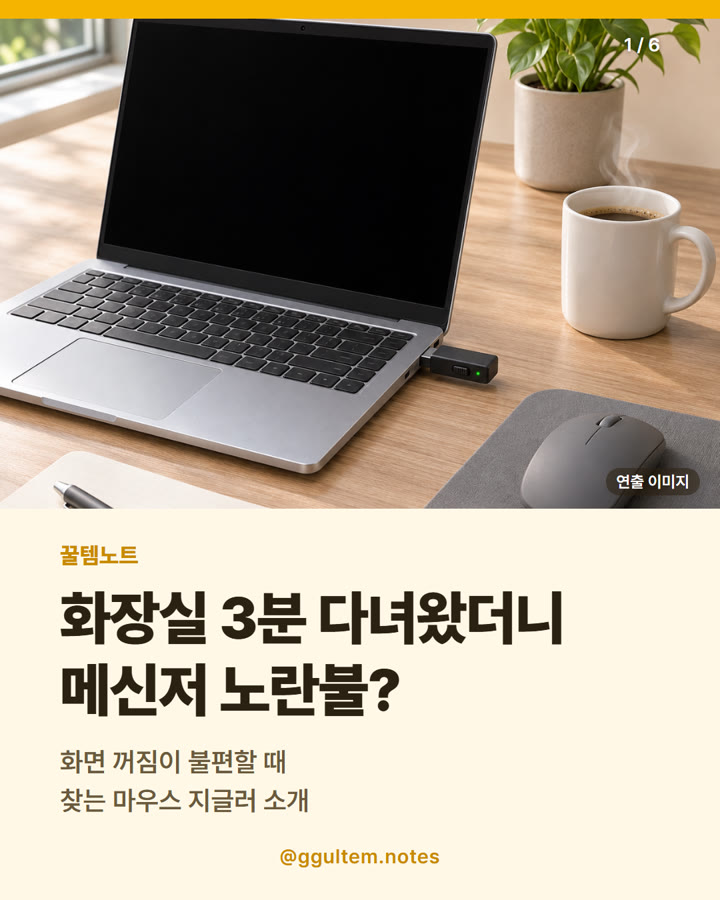

마우스 지글러 추천 — USB형 마우스 무버 고르는 법과 주의점 (VAYDEER 슈퍼미니)
2026.11.09 작성 · 꿀템노트
마우스 지글러는 USB 연결 방식인지 받침형인지, ON/OFF 스위치가 있는지, 쓰려는 PC에서 외부 장치가 허용되는지를 먼저 확인하고 고르면 돼요.

이미지는 이해를 돕기 위한 일러스트이며 실제 상품과 다를 수 있어요.
마우스 지글러는 어떤 물건일까
마우스 지글러(마우스 무버)는 컴퓨터에 연결해 두면 일정 간격으로 마우스가 움직이는 신호를 보내는 작은 장치예요. 잠깐 자리를 비워도 화면이 꺼지거나 잠기는 게 불편할 때, 긴 다운로드·렌더링 중 절전이 걱정될 때, 발표 중 화면을 유지하고 싶을 때 찾는 분들이 있어요.
이 글은 화제 뉴스가 아니라 검색 수요를 보고 정리했어요. 구글·네이버 검색창에 마우스 지글러 추천, 마우스 지글러 사용법, 마우스 무버 같은 연관 검색어가 보여요(2026.11.09 확인).
마우스 지글러 고르는 법
| 확인 항목 | 볼 곳 | 참고 |
|---|---|---|
| 연결 방식 | 상품명·상세 정보 | USB 포트에 꽂는 형태인지, 마우스 아래 두는 받침형인지 확인하세요. 이 상품은 상품명에 USB 포트가 표기돼 있어요. |
| 스위치 | 상품명·상세 정보 | ON/OFF 스위치 유무를 확인하세요. 이 상품은 ON/OFF 스위치가 표기돼 있어요. |
| 단자 규격 | 상세 정보 | 내 PC가 USB-A인지 USB-C인지 확인하세요. |
| 회사 PC 정책 | 회사 보안·IT 규정 | 외부 장치 연결이 제한될 수 있으니 꼭 확인하세요. |
마우스 지글러, 회사에서 써도 될까?
회사 보안·근무 규정은 꼭 확인하세요. 회사 PC는 USB 장치 연결이 제한되거나 장치 사용이 규정에 어긋날 수 있어요. 이 글은 근태를 속이거나 근무를 피하는 용도로 쓰라는 안내가 아니에요.
다른 상품 중에는 상품명에 감지 불가 같은 표현이 있는 것도 있지만, 감지 여부는 환경과 설정에 따라 달라질 수 있어 이 글은 보장하지 않아요.
가격·단가 비교
표의 가격은 2026.11.09 기준이며 변동 가능해요. 가격과 재고는 쿠팡 상품 페이지에서 다시 확인하세요.
| 항목 | 이 글의 상품(VAYDEER 슈퍼미니) | 비고 |
|---|---|---|
| 게시일 기준 가격 | 20,900원 (2026.11.09 기준, 변동 가능) | 정가 표기 22,000원, 5% 할인 |
| 연결 방식 | USB 포트(상품명 표기) | - |
| 스위치 | ON/OFF 스위치(상품명 표기) | - |
| 다른 유형 ①: 마우스 아래 두는 받침형 | 상품 페이지에서 확인 | 가격대·크기가 달라 상품 표기로 비교 |
| 다른 유형 ②: 더 저렴한 USB 스틱형 | 상품 페이지에서 확인 | 같은 카테고리 검색 결과에서 가격 범위가 넓어요 |
쿠팡 검색 결과에서는 가격과 구성이 제품마다 크게 달라, 연결 방식과 스위치 표기를 같이 비교하는 편이 좋아요. 다른 유형은 링크를 따로 두지 않았어요.
이런 분께 / 이런 분은 다른 선택
상품명과 표기 사양만 보고 정리했어요. 직접 사용한 경험이 아니며 성능을 보증하지 않아요.
- 이런 분께: USB 포트에 꽂는 작은 마우스 지글러를 찾는 분
- 이런 분께: 개인 PC에서 화면 꺼짐·절전을 줄이고 싶은 분
- 다른 선택: 회사 PC에서 USB 장치 사용이 제한된 분은 먼저 규정을 확인하세요.
- 다른 선택: 화면 꺼짐 시간은 운영체제의 전원·절전 설정으로도 조절할 수 있어요.
이번에 소개하는 상품
VAYDEER 슈퍼미니 마우스 지글러 USB 포트 마우스 무버
상품명에 표기된 특징은 USB 포트, 마우스 에뮬레이터, ON/OFF 스위치예요. 감지 여부나 성능을 보증하는 내용은 아니에요.
자주 묻는 질문
마우스 지글러는 어떤 장치인가요?
컴퓨터에 연결해 일정 간격으로 마우스가 움직이는 신호를 보내는 장치예요. 화면 꺼짐이나 절전 걱정이 있을 때 찾는 분들이 있어요.
마우스 지글러 사용법은 어렵나요?
USB형은 보통 포트에 꽂아 쓰는 방식이에요. 정확한 사용법은 상품 상세 정보와 안내를 확인하세요.
마우스 지글러를 회사에서 써도 되나요?
회사 보안·근무 규정은 꼭 확인하세요. 외부 장치 연결이 제한될 수 있고, 감지되지 않는다고 보장할 수 없어요.
마우스 지글러 가격은 얼마인가요?
이 글에서 소개한 상품은 2026.11.09 기준 20,900원이에요. 가격은 변동될 수 있으니 상품 페이지에서 다시 확인하세요.